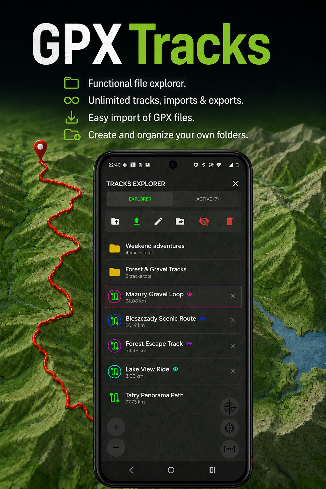
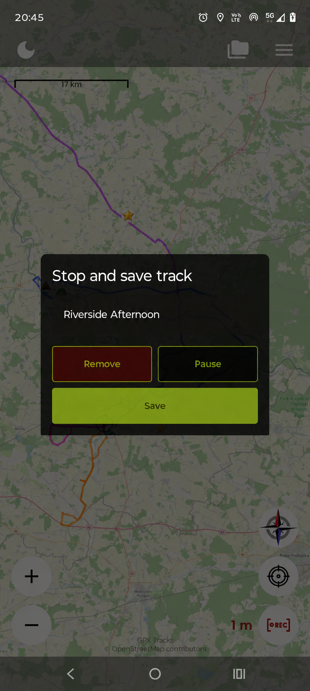
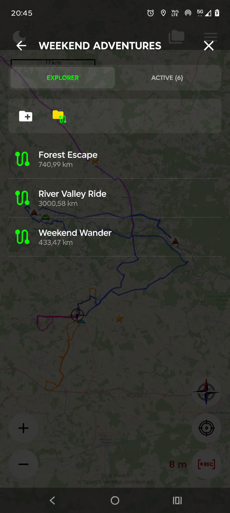
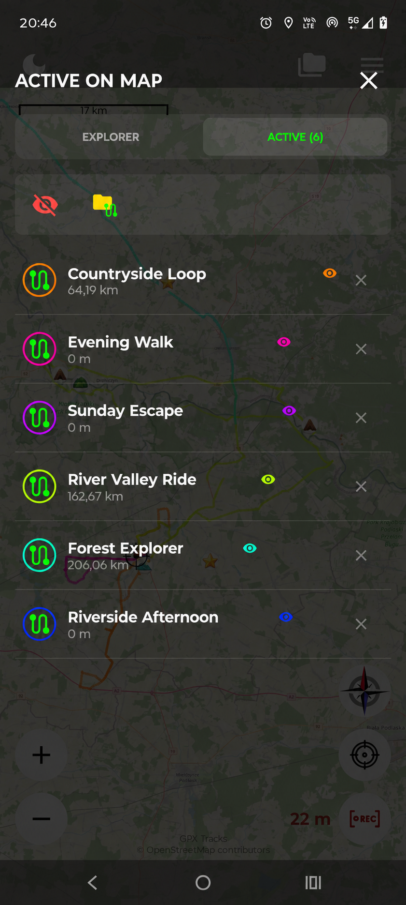
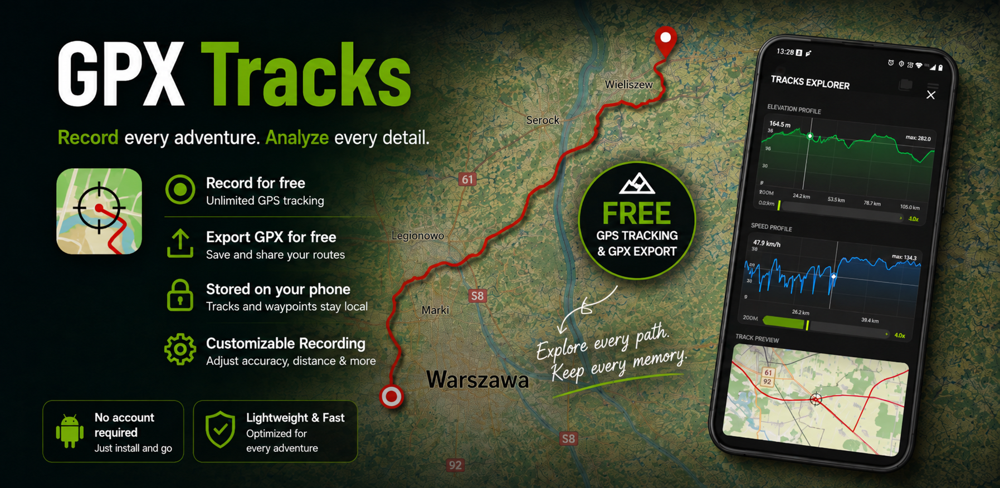

Follow your own path.
Record a GPS track and watch your distance grow. Give the finished route a name and keep it for another day.
YOUR TRACKS. YOUR PLACES. YOUR NEXT ADVENTURE.
Record your walk or ride. Save that riverside view, quiet rest stop or trailhead — and find it on your map whenever you need it.
For Android · No account needed · Free GPS recording & GPX export

FROM THE FIRST STEP TO THE LAST STOP
Record a GPS track and watch your distance grow. Give the finished route a name and keep it for another day.
Add a waypoint with a name, a note and an icon. Remember where you parked, stopped for a view or found some shade.
Open GPX files, import tracks into your library and organise them in folders. Export a track when you want to share it.
MEET WAYPOINTS
A waypoint is a place you save on the map. Give it a useful name and a short note, then choose an icon that makes it easy to spot.

GET STARTED IN A MOMENT
Touch and hold a place on the map to open the waypoint form.
Enter a title, add an optional note and choose an icon. Tap Save.
Open the menu, choose Saved waypoints and select your point.

A HOME FOR YOUR GPX FILES
Keep your recorded and imported tracks in one place. Use folders to organise trips and show several tracks on the map in different colours.
Just opening a GPX file gives you a preview. Import it when you want to keep it in your library.
How GPX files work →A CLOSER LOOK



ON YOUR PHONE. UNDER YOUR CONTROL.
Tracks and waypoints are stored locally. No account is required. Optional Firebase Analytics can be switched off in Settings; it does not include your track coordinates or waypoint content.
Online maps need an internet connection. Map providers receive requests for the area you view and normal connection data.
Read the privacy policy →
{kind=link}
{kind=link}
{kind=link}